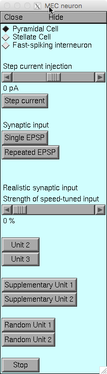
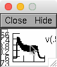
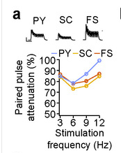

This is the readme for the models for the paper:
Justus D, Dalugge D, Bothe S, Fuhrmann F, Hannes C, Kaneko H,
Friedrichs D, Sosulina L, Schwa (2017) Glutamatergic synaptic
integration of locomotion speed via septoentorhinal projections.
Nat Neurosci 20:16-19
This NEURON code was contributed by Daniel Justus.
The NEURON simulation environment is freely available from
http://www.neuron.yale.edu">
These models simulate the integration of glutamatergic
septo-entorhinal input by MEC pyramidal cells, stellate cells and
fast-spiking interneurons.
Usage:
------
Auto-launch from ModelDB or download and extract this archive, compile
the mod files. For more help see
https://senselab.med.yale.edu/ModelDB/NEURON_DwnldGuide.html
To run the simulations use init.hoc and choose the parameters and type
of simulation from the GUI:

(1) Choose the cell-type
(2) Simulate the somatic injection of a given current
or
Simulate single or rhythmic EPSPs to evaluate kinetics
and summation (Supplementary Fig. 11a,b). As an
example: Pressing the "Repeated EPSP" button will
generate the inset 11a trace

and prints on the oc> prompt:
...
oc>
3 Hz
avg depolarization = 1.3253572
last/first = 0.82199361
second/first = 0.84701885
6 Hz
avg depolarization = 2.0933216
last/first = 0.64998273
second/first = 0.7814406
9 Hz
avg depolarization = 2.5237946
last/first = 0.59448942
second/first = 0.86925789
12 Hz
avg depolarization = 2.7927493
last/first = 0.57942791
second/first = 0.99281808
oc>
...
The second/first values corresponds to the blue py trace in Suppl. Fig
11a:

or
Simulate the realistic speed-tuned glutamatergic input
recorded from neurons in the MSBD using tetrodes as
stored in the folder "data" (Fig. 3d-f, Supplementary
Fig. 11c-m).
The strength of this speed tuned input relative to
randomly distributed input modeled by a Poisson
process can be adjusted using the slider.